Префектура Ямагата · Тэндо · ремёсла
Тэндо: как город фигур для сёги стал родиной знаменитой японской мебели
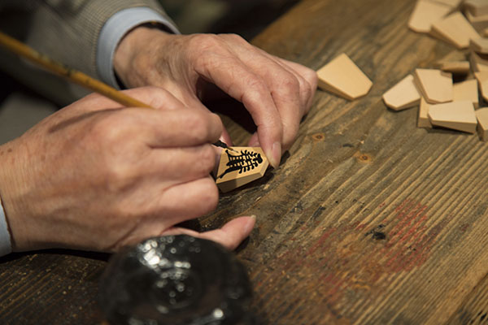
Тэндо почти в центре префектуры Ямагата известен как столица сёги, японских шахмат. Здесь же работает мебельная фабрика, чьи табуреты хранятся в музеях Нью-Йорка и Парижа, и началось всё с маленьких деревянных фигур.
Мебель
Табурет «Бабочка» из Тэндо
Табурет «Бабочка» дизайнера Сори Янаги входит в постоянные коллекции Музея современного искусства в Нью-Йорке и Лувра. Делают его в Тэндо, городе почти в самом центре префектуры Ямагата, на мебельной фабрике «Тэндо мокко». Компанию основали здесь в 1940 году, и она до сих пор связана со своим городом.
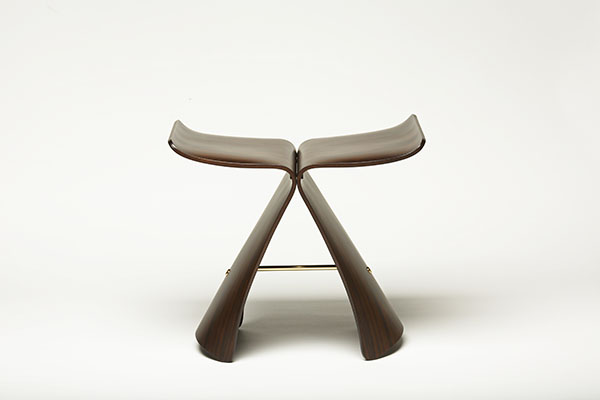
«Без мастерства „Тэндо мокко“ табурет „Бабочка“ не появился бы»
Сори Янаги
Мастерство, о котором говорил дизайнер, держится на гнутой клеёной фанере. Тонкие листы дерева складывают стопкой, кладут в форму и под огромным прессом прогревают и сжимают. Так получается материал для лёгкой и прочной мебели со сложными изгибами, как у плавных линий «Бабочки». «Тэндо мокко» первой в Японии взялась за эту технологию. Мастера Ямагаты славились старательностью, а гнутая фанера позволила выпускать хорошую мебель серийно. Вместе с ведущими архитекторами и дизайнерами страны фабрика делает вещи с такими изгибами, каких не получить из цельного дерева.
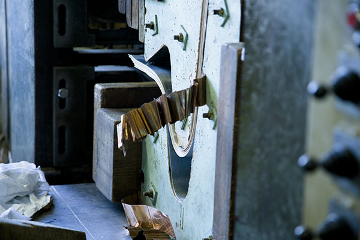
Большую роль в этом сыграл Исаму Кэммоти (1912–1971), один из мэтров японского дизайна. В 1932 году он поступил в первый в Японии государственный институт по развитию промышленности, изучал там, как производить деревянные изделия, и так познакомился с «Тэндо мокко». Технологию гнутой фанеры Кэммоти освоил ещё до войны и мечтал применить её в мебели, поэтому охотно учил мастеров фабрики. Его ассистент по институту позже стал техническим директором «Тэндо мокко». Жадная до нового фабрика из Тэндо заложила основу японского модернистского дизайна.
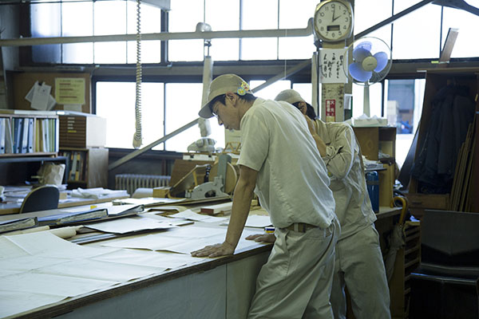
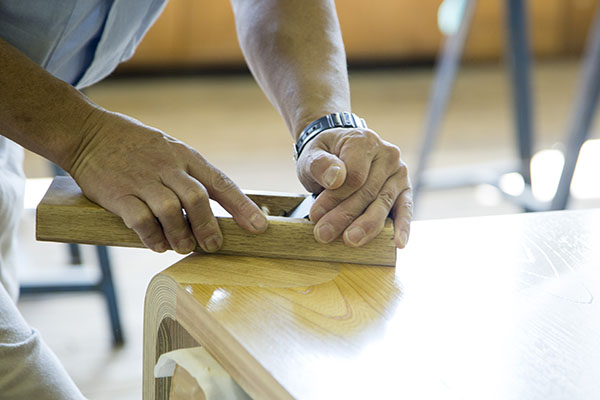
В 2021 году фабрика сделала вместе с художницей Аяко Роккаку (род. 1982), известной девочками с большими глазами, два объекта из клеёной фанеры по мотивам её фигурных холстов. Каждого выпустили по 50 штук и продали по жребию.
Истоки
Всё началось с фигур для сёги
Дерево в Тэндо обрабатывают давно, и начиналось это ремесло с фигур для сёги, которые здесь делают с эпохи Эдо. Большую часть фигур для сёги в Японии производят в Тэндо, это первое место в стране. В городе каждый год проходят партии профессионалов и много событий, достойных столицы сёги, например «живые сёги», где фигурами служат люди.
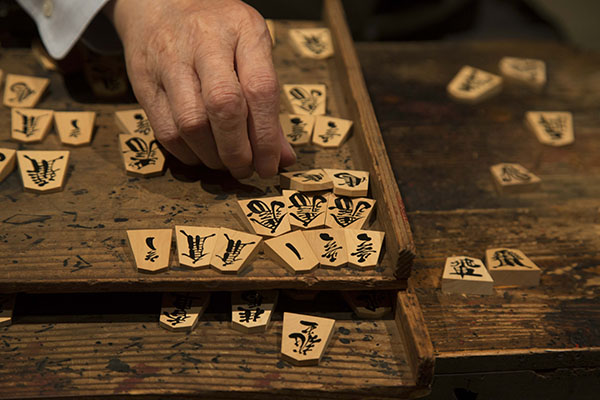
Фигуры начали делать в конце эпохи Эдо. Княжество Тэндо, которым правил род Ода, бедствовало, жалованья самураев не хватало на жизнь, и власти поощряли изготовление фигур. Так что поначалу это был приработок воинов. Знаки на фигурах бывают резными, бывают рельефными, но традиция Тэндо это «писаные» фигуры: знак курсивным почерком выводят лаком прямо по дереву.
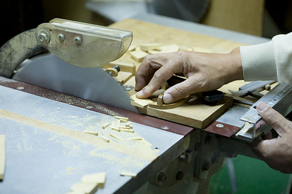
Опытный мастер расписывает одну фигуру за несколько десятков секунд. Один из таких мастеров, которому в 2017 году было 90 лет, начал помогать в мастерской в десять лет, ещё школьником, и до 89 лет писал только такие фигуры.
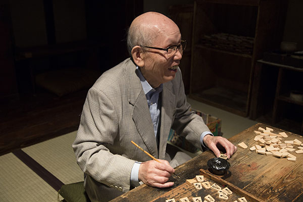
Прогулка
Город, где сёги повсюду
Фигуры сёги встречаются в Тэндо на каждом шагу: на почтовых ящиках, на плитке тротуаров и даже на крышках люков. У придорожной станции «Тэндо онсэн» есть бесплатная ножная ванна, и скамья в её воде тоже в форме фигуры сёги. Прямо в здании станции JR Тэндо работает городской музей сёги.
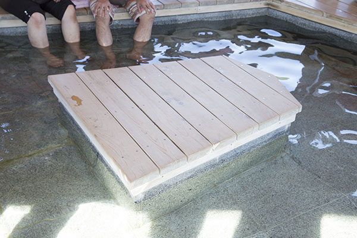
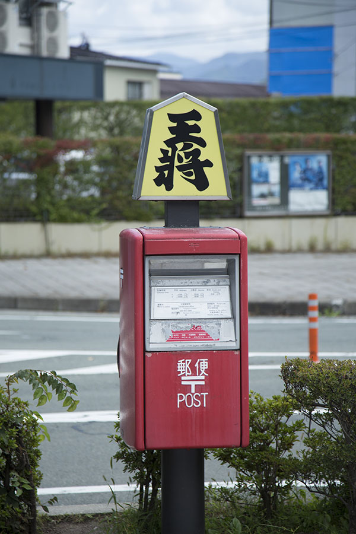
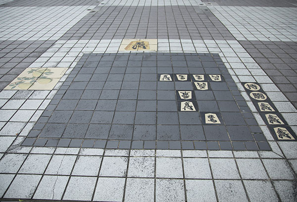
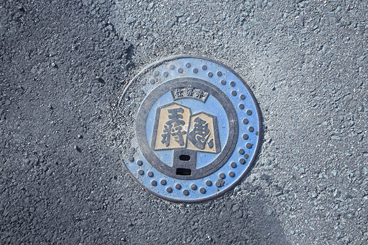
Где смотреть
Шоурум, музей и ножная ванна
Мебель «Тэндо мокко» можно посмотреть и купить в шоуруме на территории главной фабрики. Он открыт для всех, мебель здесь можно опробовать, посидев на ней. Отдельным гостям записываться не нужно; экскурсию по фабрике проводят по будням и только по записи не позже чем за неделю.
Шоурум «Тэндо мокко»
- Адрес
- префектура Ямагата, Тэндо, Мидарэгава, 1-3-10
- Телефон
- 0120-01-3121 (бесплатный номер, звонки из Японии)
- Часы работы
- 9:30–17:00
- Выходные
- некоторые праздники, каникулы в «золотую неделю», летом и зимой
- Как добраться
- 10 минут на машине от станции JR Тэндо
Музей сёги города Тэндо
- Адрес
- префектура Ямагата, Тэндо, Хоммати, 1-1-1, здание станции JR Тэндо
- Телефон
- +81 23-653-1690
Придорожная станция «Тэндо онсэн», ножная ванна
- Адрес
- префектура Ямагата, Тэндо, Кувано-мати, 2-3-41
- Цены / Вход
- бесплатно
Фото: Киёно Хаттори.